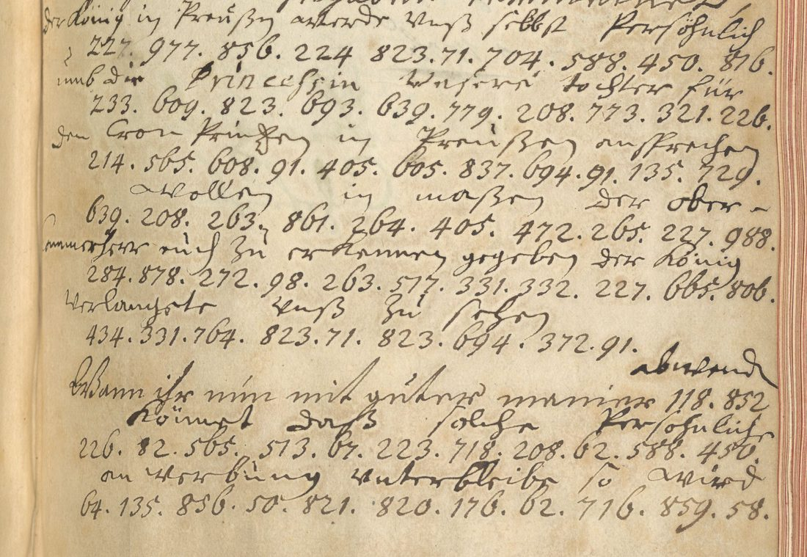

: Workshop of Sir Godfrey Kneller, after the portrait of 1714. Wikimedia Commons, public domain.")
At a glanceExisting decipherment · complete
- The letters
- Johann Wilhelm von Heusch (Berlin, 10 October 1705), Johann Ernst von Hattorf (Hanover, 31 January 1706) and Elector Georg Ludwig (Hanover, 25 May 1706) to Jobst Hermann von Ilten, the Hanoverian minister, in 1706 envoy extraordinary at Berlin.
- Where
- Gottfried Wilhelm Leibniz Bibliothek, Hanover, Ms XXIII 1245:7 ff. 201–204, 288–289, 329–330, online in the GWLB digital library. Kalliope notes each one as “Dechiffrierter Brief”.
- The cipher
- One numeric syllabic code, code B (groups 47–1010), with homophones and a null, used for French and German alike.
- How it was checked
- The office wrote the plain text over every code run. It was transcribed here, and every group was checked against its other occurrences. No gloss contradicts another.
- What it says
- The letters work towards the marriage of the Elector’s daughter Sophia Dorothea to the Prussian Crown Prince, through the Ober-Cammerherr Kolbe von Wartenberg.
- Still open
- Seven groups the interliner left without a gloss, none of them needed for the sense.

01 The record
The project’s scan of 23 September 2026 listed the Ilten letters at the GWLB as “not deciphered”. Kalliope notes each of them Dechiffrierter Brief, a deciphered letter, and the images are in the GWLB’s Kitodo library (Receuil de Lettres a Jobst Hermann d’Ilten, part VII); how they were found is told on the page of the 1697 letter. That letter, Hattorf to Ilten of 7 November 1697, is in an earlier and smaller code: Hattorf to Ilten, 1697 (a different cipher, with its own page). The two letters of 1743 to Johann Georg von Ilten are in a later code, on their own page.
Kalliope gives “Herzog Georg Wilhelm” as the sender of the letter of 25 May 1706. The letter is signed Georg Ludwig Churfürst and countersigned by Hattorf, and Kalliope’s own creator field names Georg I.
02 The code
- Code B (1705–06, groups up to 1010): one code for Heusch, Hattorf and the Elector, in French and in German. The same group keeps its meaning across languages: 977 is Roy de Prusse and König in Preußen, 988 Gr. Chambellan and Ober-Cammerherr, and 609 Princesse and Princessin. 665 is Roy or König, 476 mariage and 224 de, and 405.709.543 spells in-si-nu- in insinuer, n’insinuiés and insinuationes. Group 91 is a null: it sits inside per-son-[91]-ne and de-man-[91]-der.
03 The letters
Transcribed from the scans. Words in code are in italics, as the interliner deciphered them. The spelling is kept.
Heusch to Ilten, Berlin, 10 October 1705
The chamberlain Count Wartensleben, back from Hanover, had Heusch told, par Monsr. de Berlips “pour mieux cacher nostre commerce”, that he had set out the Elector’s good intentions to the King. He had also spoken well of Madame la Princesse, fille de S.A.El., without touching on le point de Mariage. He had raised it with the Grand Chamberlain instead, ce Ministre, who was committed de parole to another match but might be won over. Neither Madame de Bulow nor Mademoiselle de Pelnitz must appear to have a hand in it, and it can succeed only par le Canal du Gr. Chambellan.
Hattorf to Ilten, Hanover, 31 January 1706
Ilten’s two letters reached the Elector en ses mains propres, seen by no one but Hattorf. When the mariage is raised with him again in Berlin, Ilten is to let it be understood que vous n’en estes pas instruit, since it is not la coutume d’offrir aussi bientost les Princesses de cette maison. There is a clear postscript on Goertz’s rheumatism, Eltz’s mission to Mainz and Trier, the Lübeck see, and the fear that Charles XII might march out of Poland.
The Elector to Ilten, Hanover, 25 May 1706

…daß ihr Ursache zu glauben zu haben vermeinet, der König in Preußen würde sich selbst persöhnlich umb die Princessin unsere Tochter für den Cron Printzen in Preußen ansprechen wollen, in maßen der Ober-Cammerherr euch zu erkennen gegeben… Wann ihr nun mit guter maniere abwenden könnet, daß solche persöhnliche anwerbung unterbliebe, so wird es Uns sehr lieb seyn…
The Elector expects the King to come in person to ask for his daughter’s hand. Ilten is to prevent the visit discreetly, “bloss als für euch”, by insinuations to the Ober-Cammerherr alone. Sophia Dorothea married the Crown Prince Frederick William on 28 November 1706.
04 Method and check
The three letters were fetched from the GWLB METS files. The clear text, the 418 code groups and the glosses were transcribed from crops of the master images, and a table was built of every group with every gloss it carries. Where a group recurs it carries the same value, in French and German alike, and nothing contradicts. That consistency is the check. It also shows the null 91. No key sheet for the code is known, and none was rebuilt: the glosses already give the reading.
05 What remains open
- Heusch 1705, f. 201v: group 419 after à, with 463 written above it and no gloss. The sentence reads without it.
- Hattorf 1706: 709.276 before juger, 78? before trouve, 626 after choque, and 728.36? after on. These six groups carry no gloss. Code B has no key, so they stay open.
- Several groups at the right margin run into the binding. Their glosses are legible, so the reading does not depend on them.
Full texts
The transcription and the decryption of every document on this page, so that the reading can be used and checked. Short files are shown here; all are in the repository.
Heusch to Ilten, Berlin, 10 Oct 1705, Ms XXIII 1245:7 ff. 201r-204r
Heusch reports from Berlin that Count Wartensleben has put the King of Prussia in good dispositions and spoken well of the Electoral Princess Sophia Dorothea, raising the marriage with the Grand Chamberlain (Kolbe von Wartenberg), through whom alone it can succeed. Decryption: the contemporary interlinear gloss (letter B section of the file).
Transcription
# letter B: code runs in order, one run per line (from the transcription files) 403 405 709 543 272 580 499 224 165 449 85 71 602 189 208 272 204 75 195 147 665 224 948 403 1010 632 403 48 419 609 307 96 438 224 948 58 261 438 598 242 476 147 988 96 407 632 403 224 296 824 657 693 75 438 476 242 979 609 195 490 639 224 578 659 438 602 150 240 97 417 403 438 327 70? 513 75 831 293 263 824 5? 78 201 602 977 993 464 224 585 96 826 67 49 443 469 71 96 124 623 195 71 218 478 71 124 224 203 91 693 632 263 195 632 261 513 623 580 438 189 50? 224 988 203 9? 764
Decryption
# Letters B and C to Jobst Hermann von Ilten, 1705-1706, code B (GWLB Hannover, Ms XXIII 1245:7); D is letter_D_1706.txt
# Split on 14 Oct 2026 from targets/ilten1697/letters_1697_1706.txt; letter A (code A) stays there as letter_A_1697.txt.
# Transcribed 24 Sept 2026 from the GWLB master images (digitale-sammlungen.gwlb.de, public domain).
# Clear text as written (spelling kept, abbreviations kept). Each code run is written
# [groups = contemporary interlinear gloss]
# with the gloss as the interliner wrote it over those groups. Groups the interliner left without a gloss
# are marked [groups = ---]. '?' in a group = digit hidden in the binding. {..} = struck or interlined clear text.
## B. Johann Wilhelm von Heusch to J. H. von Ilten, Berlin, 10 Oct 1705 -- Ms XXIII 1245:7, ff. 201r-204r (phys. 405-411)
## code B (groups 47-1010), French
Monsieur. le 10 8bre 1705
le Chambellan Monsr. le Comte de Wartensleben ne peut assez se louer des honnetetés et des honneurs qu'il a receus à
Hannovre, il se trouve confus du beau present qu'on y a adjouté et auquel il ne s'attendoit pas; [403 = il] m'a
fait [405.709.543.272 = insinuer] [580 = par] [499 = Monsr.] [224 = de] [165.449.85.71 = Berlips] [602 = pour]
mieux [189.208.272 = cacher] nostre [204.75.195 = commerce] qu'ayant eu occasion de faire connoitre [147 = au]
[665 = Roy] la droiture des sentiments [224 = de] [948 = S.A.E.] [403 = il] avoit mis [1010 = Sa Mté] dans des
dispositions assez favorables [632.403 = qu' il] avoit aussy {struck: ...} {struck: ...} rendu justice [48 = à]
[419 = ---] {463 written above 419} [609 = Madame la Princesse] [307.96.438 = Fille] [224 = de] [948 = S.A.El.]
en parlant fort advantageusement [58 = d'] [261 = Elle] sans pourtant toucher [438.598.242 = le point de]
[476 = Mariage] mais qu'il en avoit pourtant parlé [147 = au] [988 = Gr. Chambellan] en luy faisant comprendre
[96.407 = l'interest] particulier [632.403 = qu' il] avoit [224 = de] [296.824.657.693.75 = favoriser]
[438.476.242.979 = le mariage du Prince Royal] avec lad[i]te [609 = Princesse] que quoy que
[195.490.639 = ce Ministre] fut engagé [224.578.659.438 = de parole] [602 = pour] un [150 = autre]
en[240.97 = droit]. [417.403 = Il] esperoit pourtant [438.327.70?.513.75 = le gagner] d'une maniere que l'affaire
susdite pourra avec le temps estre mise sur le tapis avec esperance de succes et qu'alors [831 = votre]
[293 = expedient] pourra estre [263.824.5? = envoyé] [78.201 = icy] pour y travailler qu'il estoit encor
necessaire de temporiser un peu et d'avoir [602.977 = pour le Roy de Prusse] toutes les complaisances possibles
et d'eviter sur tout qu'il ne paroisse point que ni [993 = Madame de Bulow] ni [464 = Mademoiselle] [224 = de]
[585.96.826.67.49 = Pelnitz] ayent [443 = les] [469.71 = mains] dans [96.124 = l'affaire]. J'ay assuré qu'on se
trompoit fort de croire [623.195.71.218.478.71 = que ces Dames] fussent employées dans une [124 = affaire]
[224 = de] cette [203.91.693 = conse-] [632.263.195 = quence] veu qu'on n'estoit que trop persuadé
[632.261 = qu'elle] [513 = ne] pouvoit reussir [623 = que] [580 = par] [438 = le] [189.50? = Canal]
[224 = du] [988 = Gr. Chambellan]. Ledit [203.9?.764 = Conte] continuera de me faire advertir soubs-main de ce
qui se passera sur le suiet de question pour qu'on puisse prendre ses mesures la dessus.
V. Excell. voudra bien rendre compte de cecy en jugeant elle mesme de la necessité qu'il y a que tout soit
soigneusement menagé. Je me rapporte pour le reste à ma relation et suis tousjours avec le mesme zele et respect
Monsieur de V. Excell. le tres humble et tres obeissant serviteur Heusch. Berlin ce 10 8bre 1705
## C. Johann Ernst von Hattorf to J. H. von Ilten, Hannover, 31 Jan 1706 -- Ms XXIII 1245:7, ff. 288r-289r (phys. 579-581)
## code B, French
Hannover ce 31 janv. 1706
Monsieur
Les deux lettres que vous avez escrites à [280 = S.A.E.] pour [693.71 = ses] [460 = mains] [405.73.611.605 = propres]
[105.455.51 = luy] ont [278 = esté] [173 = bien] [643.242.276 = rendues] sans que [587.716.91.517 = personne]
les [48.53.67 = aye] [805.63.276 = veus] à la reserve [224 = de] [497 = moy]. J'ay eté [208.75.331 = chargé]
[224 = de] {struck group} [224.460.91.224.103 = demander (written de-mander, the de struck)] la
[229.753 = dessus] [624 = que] quand [565 = on] [832 = vous] [639.580.438.635 = reparlera] au lieu où vous
estes {struck group} [242 = du] [476 = mariage], [832 = vous] [303.639.117 = ferez] bien, Monsieur,
[224 = de] faire [264.771.241 = entendre] [624 = que] [832 = vous] n'en [278.73 = estes] [583 = pas]
[405.731.661.417 = instruit] et que selon que [83 = vous] [615.100.105 = puissiez] [709.276 = ---] juger, ce
n'estoit pas [429 = la] [203.109.795.478 = coutume] {struck: 7?? , 7} [224.557 = d'offrir]
[151.878.170.64.771 = aussi bientost] [438 = les] [105.609.71 = Princesses] [224 = de] [197 = cette]
[467 = maison]. [280 = S.A.E.] ne doute pas, Monsieur, [625 = que] [832 = vous] [91 = (null)]
[405.709.543.62.47 = n'insinuiés] cecy [224 = de] [179.513 = bonne] [351.116.195 = grace], et de la maniere
qu' [565 = on] ne [73.265 = s'en] [78? = ---] [785.572 = trouve] [805.583 = pas] [208.97.112? = choque]
[626 = ---]. D'ailleurs [565 = on] [728.36? = ---] [100.764 = souhaite] [314 = fort] [78.54.53 = icy] un
[377.283.55 = heureux] [748 = succès] [224 = de] [197 = cette] [124? = affaire], dont [832 = vous]
[147.639.49 = aurez] en ce cas [823 = un] [791 = tres] [356.478 = grand] [657.764 = merite].
Le rumatisme de Mr. le Baron de Goerz ne cessant pas encore, Mr. le Baron d'Eltz a ordre d'aller en sa place aux
cours de Mayence et de Treves, ayant dessein de partir dès que Mr. le Comte de Schönborn Gr. Veneur de
l'Electeur de Mayence sera arrivé icy. il est attendu à tout moment. La reunion de la Maison est conclue et
ratifiée. L'affaire de l'Eveché de Lubek se paroit aigrir. Si le Roy de Suede sort de Pologne pour venir au
secour de l'Adm[inistrateu]r d'Holstein, les cercles de la {struck: Basse} Saxe et toute l'Allemagne sera mise
en combustion. Ce que Dieu ne veuille. Je suis avec tout le zele imaginable
Monsieur votre tres humble et tres obeissant serviteur HattorfReading
# B. Johann Wilhelm von Heusch to J. H. von Ilten, Berlin, 10 Oct 1705: reading Rests on: `letters_BC_1705_1706.txt` (clear text transcribed from the GWLB master images, the code runs with the contemporary interlinear gloss written over them). Written out for the v3 verification (23 Oct 2026) without the [groups = gloss] notation, which the scorer takes for supplied words: each code run is replaced by its contemporary gloss as the interliner wrote it; runs he left without a gloss are [?]; struck clear text is left out, interlined clear text kept; spelling as written. ## Reading Monsieur. le 10 8bre 1705 le Chambellan Monsr. le Comte de Wartensleben ne peut assez se louer des honnetetés et des honneurs qu'il a receus à Hannovre, il se trouve confus du beau present qu'on y a adjouté et auquel il ne s'attendoit pas; il m'a fait insinuer par Monsr. de Berlips pour mieux cacher nostre commerce qu'ayant eu occasion de faire connoitre au Roy la droiture des sentiments de S.A.E. il avoit mis Sa Mté dans des dispositions assez favorables qu' il avoit aussy rendu justice à [?] Madame la Princesse Fille de S.A.El. en parlant fort advantageusement d' Elle sans pourtant toucher le point de Mariage mais qu'il en avoit pourtant parlé au Gr. Chambellan en luy faisant comprendre l'interest particulier qu' il avoit de favoriser le mariage du Prince Royal avec lad[i]te Princesse que quoy que ce Ministre fut engagé de parole pour un autre endroit. Il esperoit pourtant le gagner d'une maniere que l'affaire susdite pourra avec le temps estre mise sur le tapis avec esperance de succes et qu'alors votre expedient pourra estre envoyé icy pour y travailler qu'il estoit encor necessaire de temporiser un peu et d'avoir pour le Roy de Prusse toutes les complaisances possibles et d'eviter sur tout qu'il ne paroisse point que ni Madame de Bulow ni Mademoiselle de Pelnitz ayent les mains dans l'affaire. J'ay assuré qu'on se trompoit fort de croire que ces Dames fussent employées dans une affaire de cette consequence veu qu'on n'estoit que trop persuadé qu'elle ne pouvoit reussir que par le Canal du Gr. Chambellan. Ledit Conte continuera de me faire advertir soubs-main de ce qui se passera sur le suiet de question pour qu'on puisse prendre ses mesures la dessus. V. Excell. voudra bien rendre compte de cecy en jugeant elle mesme de la necessité qu'il y a que tout soit soigneusement menagé. Je me rapporte pour le reste à ma relation et suis tousjours avec le mesme zele et respect Monsieur de V. Excell. le tres humble et tres obeissant serviteur Heusch. Berlin ce 10 8bre 1705
Translation
# B. Johann Wilhelm von Heusch to J. H. von Ilten, Berlin, 10 Oct 1705: English translation Translation (Claude Opus 5.5, 23 Oct 2026) of `letter_B_reading.md` (the clear letter with each code run replaced by the contemporary interlinear gloss). French. Same hole: `[?]` a run left without a gloss. ## Translation Monsieur. The 10th of October 1705. The Chamberlain, Monsieur the Count of Wartensleben, cannot praise enough the courtesies and honours he received at Hanover; he is confused by the fine present that was added there, and which he did not expect. He has had it intimated to me by Monsieur de Berlips, the better to hide our dealings, that, having had occasion to make known to the King the uprightness of His Electoral Highness's sentiments, he had put His Majesty into rather favourable dispositions; that he had also done justice to [?] Madame the Princess, daughter of His Electoral Highness, speaking very advantageously of her, without however touching on the point of marriage; but that he had nevertheless spoken of it to the Grand Chamberlain, making him understand the particular interest he had in favouring the marriage of the Crown Prince with the said Princess; that, although this Minister was pledged by his word to another quarter, he hoped nevertheless to win him over in such a way that the aforesaid affair could in time be put on the table with hope of success, and that then your expedient could be sent here to work on it; that it was still necessary to temporise a little and to show the King of Prussia every possible complaisance, and above all to avoid its appearing that either Madame de Bülow or Mademoiselle de Pöllnitz have a hand in the affair. I gave assurance that people were much mistaken to believe that these ladies were employed in an affair of such consequence, since one was only too persuaded that it could succeed only through the channel of the Grand Chamberlain. The said Count will continue to have me warned secretly of what passes on the subject in question, so that measures can be taken accordingly. Your Excellency will be pleased to give an account of this, judging yourself how necessary it is that everything be carefully handled. For the rest I refer to my report, and am always, with the same zeal and respect, Monsieur, Your Excellency's very humble and very obedient servant, Heusch. Berlin, this 10th of October 1705.
Hattorf to Ilten, Hannover, 31 Jan 1706, Ms XXIII 1245:7 ff. 288r-289r
Ilten's letters reached the Elector privately; if the marriage is raised at Berlin Ilten is to say he knows nothing, as it is not the custom to offer the princesses of this house so soon. Clear postscript on Goertz, Eltz, Schönborn, the Lübeck see and Charles XII. Decryption: the contemporary gloss (letter C section of the file).
Transcription
# letter C: code runs in order, one run per line (from the transcription files) 280 693 71 460 405 73 611 605 105 455 51 278 173 643 242 276 587 716 91 517 48 53 67 805 63 276 224 497 208 75 331 224 224 460 91 224 103 229 753 624 565 832 639 580 438 635 242 476 832 303 639 117 224 264 771 241 624 832 278 73 583 405 731 661 417 83 615 100 105 709 276 429 203 109 795 478 224 557 151 878 170 64 771 438 105 609 71 224 197 467 280 625 832 91 405 709 543 62 47 224 179 513 351 116 195 565 73 265 78? 785 572 805 583 208 97 112? 626 565 728 36? 100 764 314 78 54 53 377 283 55 748 224 197 124? 832 147 639 49 823 791 356 478 657 764
Decryption
# Letters B and C to Jobst Hermann von Ilten, 1705-1706, code B (GWLB Hannover, Ms XXIII 1245:7); D is letter_D_1706.txt
# Split on 14 Oct 2026 from targets/ilten1697/letters_1697_1706.txt; letter A (code A) stays there as letter_A_1697.txt.
# Transcribed 24 Sept 2026 from the GWLB master images (digitale-sammlungen.gwlb.de, public domain).
# Clear text as written (spelling kept, abbreviations kept). Each code run is written
# [groups = contemporary interlinear gloss]
# with the gloss as the interliner wrote it over those groups. Groups the interliner left without a gloss
# are marked [groups = ---]. '?' in a group = digit hidden in the binding. {..} = struck or interlined clear text.
## B. Johann Wilhelm von Heusch to J. H. von Ilten, Berlin, 10 Oct 1705 -- Ms XXIII 1245:7, ff. 201r-204r (phys. 405-411)
## code B (groups 47-1010), French
Monsieur. le 10 8bre 1705
le Chambellan Monsr. le Comte de Wartensleben ne peut assez se louer des honnetetés et des honneurs qu'il a receus à
Hannovre, il se trouve confus du beau present qu'on y a adjouté et auquel il ne s'attendoit pas; [403 = il] m'a
fait [405.709.543.272 = insinuer] [580 = par] [499 = Monsr.] [224 = de] [165.449.85.71 = Berlips] [602 = pour]
mieux [189.208.272 = cacher] nostre [204.75.195 = commerce] qu'ayant eu occasion de faire connoitre [147 = au]
[665 = Roy] la droiture des sentiments [224 = de] [948 = S.A.E.] [403 = il] avoit mis [1010 = Sa Mté] dans des
dispositions assez favorables [632.403 = qu' il] avoit aussy {struck: ...} {struck: ...} rendu justice [48 = à]
[419 = ---] {463 written above 419} [609 = Madame la Princesse] [307.96.438 = Fille] [224 = de] [948 = S.A.El.]
en parlant fort advantageusement [58 = d'] [261 = Elle] sans pourtant toucher [438.598.242 = le point de]
[476 = Mariage] mais qu'il en avoit pourtant parlé [147 = au] [988 = Gr. Chambellan] en luy faisant comprendre
[96.407 = l'interest] particulier [632.403 = qu' il] avoit [224 = de] [296.824.657.693.75 = favoriser]
[438.476.242.979 = le mariage du Prince Royal] avec lad[i]te [609 = Princesse] que quoy que
[195.490.639 = ce Ministre] fut engagé [224.578.659.438 = de parole] [602 = pour] un [150 = autre]
en[240.97 = droit]. [417.403 = Il] esperoit pourtant [438.327.70?.513.75 = le gagner] d'une maniere que l'affaire
susdite pourra avec le temps estre mise sur le tapis avec esperance de succes et qu'alors [831 = votre]
[293 = expedient] pourra estre [263.824.5? = envoyé] [78.201 = icy] pour y travailler qu'il estoit encor
necessaire de temporiser un peu et d'avoir [602.977 = pour le Roy de Prusse] toutes les complaisances possibles
et d'eviter sur tout qu'il ne paroisse point que ni [993 = Madame de Bulow] ni [464 = Mademoiselle] [224 = de]
[585.96.826.67.49 = Pelnitz] ayent [443 = les] [469.71 = mains] dans [96.124 = l'affaire]. J'ay assuré qu'on se
trompoit fort de croire [623.195.71.218.478.71 = que ces Dames] fussent employées dans une [124 = affaire]
[224 = de] cette [203.91.693 = conse-] [632.263.195 = quence] veu qu'on n'estoit que trop persuadé
[632.261 = qu'elle] [513 = ne] pouvoit reussir [623 = que] [580 = par] [438 = le] [189.50? = Canal]
[224 = du] [988 = Gr. Chambellan]. Ledit [203.9?.764 = Conte] continuera de me faire advertir soubs-main de ce
qui se passera sur le suiet de question pour qu'on puisse prendre ses mesures la dessus.
V. Excell. voudra bien rendre compte de cecy en jugeant elle mesme de la necessité qu'il y a que tout soit
soigneusement menagé. Je me rapporte pour le reste à ma relation et suis tousjours avec le mesme zele et respect
Monsieur de V. Excell. le tres humble et tres obeissant serviteur Heusch. Berlin ce 10 8bre 1705
## C. Johann Ernst von Hattorf to J. H. von Ilten, Hannover, 31 Jan 1706 -- Ms XXIII 1245:7, ff. 288r-289r (phys. 579-581)
## code B, French
Hannover ce 31 janv. 1706
Monsieur
Les deux lettres que vous avez escrites à [280 = S.A.E.] pour [693.71 = ses] [460 = mains] [405.73.611.605 = propres]
[105.455.51 = luy] ont [278 = esté] [173 = bien] [643.242.276 = rendues] sans que [587.716.91.517 = personne]
les [48.53.67 = aye] [805.63.276 = veus] à la reserve [224 = de] [497 = moy]. J'ay eté [208.75.331 = chargé]
[224 = de] {struck group} [224.460.91.224.103 = demander (written de-mander, the de struck)] la
[229.753 = dessus] [624 = que] quand [565 = on] [832 = vous] [639.580.438.635 = reparlera] au lieu où vous
estes {struck group} [242 = du] [476 = mariage], [832 = vous] [303.639.117 = ferez] bien, Monsieur,
[224 = de] faire [264.771.241 = entendre] [624 = que] [832 = vous] n'en [278.73 = estes] [583 = pas]
[405.731.661.417 = instruit] et que selon que [83 = vous] [615.100.105 = puissiez] [709.276 = ---] juger, ce
n'estoit pas [429 = la] [203.109.795.478 = coutume] {struck: 7?? , 7} [224.557 = d'offrir]
[151.878.170.64.771 = aussi bientost] [438 = les] [105.609.71 = Princesses] [224 = de] [197 = cette]
[467 = maison]. [280 = S.A.E.] ne doute pas, Monsieur, [625 = que] [832 = vous] [91 = (null)]
[405.709.543.62.47 = n'insinuiés] cecy [224 = de] [179.513 = bonne] [351.116.195 = grace], et de la maniere
qu' [565 = on] ne [73.265 = s'en] [78? = ---] [785.572 = trouve] [805.583 = pas] [208.97.112? = choque]
[626 = ---]. D'ailleurs [565 = on] [728.36? = ---] [100.764 = souhaite] [314 = fort] [78.54.53 = icy] un
[377.283.55 = heureux] [748 = succès] [224 = de] [197 = cette] [124? = affaire], dont [832 = vous]
[147.639.49 = aurez] en ce cas [823 = un] [791 = tres] [356.478 = grand] [657.764 = merite].
Le rumatisme de Mr. le Baron de Goerz ne cessant pas encore, Mr. le Baron d'Eltz a ordre d'aller en sa place aux
cours de Mayence et de Treves, ayant dessein de partir dès que Mr. le Comte de Schönborn Gr. Veneur de
l'Electeur de Mayence sera arrivé icy. il est attendu à tout moment. La reunion de la Maison est conclue et
ratifiée. L'affaire de l'Eveché de Lubek se paroit aigrir. Si le Roy de Suede sort de Pologne pour venir au
secour de l'Adm[inistrateu]r d'Holstein, les cercles de la {struck: Basse} Saxe et toute l'Allemagne sera mise
en combustion. Ce que Dieu ne veuille. Je suis avec tout le zele imaginable
Monsieur votre tres humble et tres obeissant serviteur HattorfReading
# C. Johann Ernst von Hattorf to J. H. von Ilten, Hannover, 31 Jan 1706: reading Rests on: `letters_BC_1705_1706.txt` (clear text transcribed from the GWLB master images, the code runs with the contemporary interlinear gloss written over them). Written out for the v3 verification (23 Oct 2026) without the [groups = gloss] notation, which the scorer takes for supplied words: each code run is replaced by its contemporary gloss as the interliner wrote it; runs he left without a gloss are [?]; struck clear text is left out, interlined clear text kept; spelling as written. ## Reading Hannover ce 31 janv. 1706 Monsieur Les deux lettres que vous avez escrites à S.A.E. pour ses mains propres luy ont esté bien rendues sans que personne les aye veus à la reserve de moy. J'ay eté chargé de demander la dessus que quand on vous reparlera au lieu où vous estes du mariage, vous ferez bien, Monsieur, de faire entendre que vous n'en estes pas instruit et que selon que vous puissiez [?] juger, ce n'estoit pas la coutume d'offrir aussi bientost les Princesses de cette maison. S.A.E. ne doute pas, Monsieur, que vous n'insinuiés cecy de bonne grace, et de la maniere qu' on ne s'en [?] trouve pas choque [?]. D'ailleurs on [?] souhaite fort icy un heureux succès de cette affaire, dont vous aurez en ce cas un tres grand merite. Le rumatisme de Mr. le Baron de Goerz ne cessant pas encore, Mr. le Baron d'Eltz a ordre d'aller en sa place aux cours de Mayence et de Treves, ayant dessein de partir dès que Mr. le Comte de Schönborn Gr. Veneur de l'Electeur de Mayence sera arrivé icy. il est attendu à tout moment. La reunion de la Maison est conclue et ratifiée. L'affaire de l'Eveché de Lubek se paroit aigrir. Si le Roy de Suede sort de Pologne pour venir au secour de l'Adm[inistrateu]r d'Holstein, les cercles de la Saxe et toute l'Allemagne sera mise en combustion. Ce que Dieu ne veuille. Je suis avec tout le zele imaginable Monsieur votre tres humble et tres obeissant serviteur Hattorf
Translation
# C. Johann Ernst von Hattorf to J. H. von Ilten, Hannover, 31 Jan 1706: English translation Translation (Claude Opus 5.5, 23 Oct 2026) of `letter_C_reading.md` (the clear letter with each code run replaced by the contemporary interlinear gloss). French. Same hole: `[?]` a run left without a gloss. ## Translation Hanover, this 31st of January 1706. Monsieur, the two letters you wrote to His Electoral Highness for his own hands were duly delivered to him without anyone having seen them except me. I have been charged to ask in this regard that, when you are spoken to again of the marriage where you are, you will do well, Monsieur, to give it to be understood that you are not instructed about it, and that, as far as you can [?] judge, it was not the custom to offer the Princesses of this house so soon. His Electoral Highness does not doubt, Monsieur, that you will intimate this with good grace, and in such a manner that no one [?] is shocked by it [?]. Besides, one [?] greatly wishes here for a happy success of this affair, of which in that case you will have very great merit. Since the rheumatism of Monsieur the Baron von Goertz has not yet ceased, Monsieur the Baron von Eltz has orders to go in his place to the courts of Mainz and Trier, intending to leave as soon as Monsieur the Count of Schönborn, Grand Huntsman of the Elector of Mainz, has arrived here; he is expected at any moment. The reunion of the House is concluded and ratified. The affair of the bishopric of Lübeck seems to be growing sour. If the King of Sweden comes out of Poland to come to the help of the Administrator of Holstein, the circles of Saxony and all Germany will be set ablaze. Which God forbid. I am, with all imaginable zeal, Monsieur, your very humble and very obedient servant, Hattorf.
Elector Georg Ludwig to Ilten, Hannover, 25 May 1706, Ms XXIII 1245:7 ff. 329r-330r
The Elector hears that the King in Prussia means to ask in person for his daughter's hand for the Crown Prince; Ilten is to head off the personal visit discreetly through the Ober-Cammerherr. The marriage of Frederick William and Sophia Dorothea took place on 28 Nov 1706.
Transcription
# letter D: code runs in order, one run per line (from the transcription files) 227 977 856 224 823 71 704 588 450 816 233 609 823 693 639 779 208 773 321 226 214 565 608 91 405 605 837 694 91 135 729 639 208 263 861 264 405 472 265 227 988 284 878 272 98 263 577 331 332 227 665 806 434 331 764 823 71 823 694 372 91 118 852 226 82 565 513 67 223 718 208 62 588 450 64 135 856 50 821 820 176 62 716 859 58 819 856 224 6? 402 285 169 774 229 362 96 165 806 74? 263 399 237 208 175 570 132 321 284 819 279 841 243 405 709 543 48 777 276 166 225 557 190 375 91 405 472 263 402 335 722 526 62 470 226 856 227 148 693 51 284 279 845 218 827 485 98 264 878 436 93
Decryption
# D. Elector Georg Ludwig of Brunswick-Lüneburg to Jobst Hermann von Ilten, envoy extraordinary at the Prussian court,
# Hannover, 25 May 1706. GWLB Ms XXIII 1245:7, ff. 329r-330r (phys. 661-663). Signed "Georg Ludwig Churfürst",
# countersigned "J Hattorf"; address leaf f. 330r ("Dem Edlen Vesten, Unserm Geheimten Rhat, jetzigem Envoyé
# extraordinaire am Königl. Preußischen Hoffe und lieben Getreuen, Jobst Herman von Ilten ... Berlin").
# Code B (same numbers as Heusch 1705 and Hattorf 1706: 977 King in Prussia, 988 Ober-Cammerherr, 609 Princess,
# 665 King, 405 in, 405.709.543 insinu-). German clear text in Kurrent, read here at word level; the interlinear
# glosses are German Kurrent in the same hand and are given word by word as placed over the groups.
# [groups = gloss]; line breaks follow the manuscript lines of cipher.
Von Gottes gnaden Georg Ludewig, Hertzog zu Braunschweig und Lüneburg, des Heyl. Römischen Reichs Churfürst,
Unsern gnädigen gruß zuvor, Edler, Vester, Rhat, und lieber Getreuer! Wir haben aus euerer eigenhändigen relation
vom 22ten dieses vernommen, daß ihr Ursache zu glauben zu haben vermeinet,
[227.977.856.224.823.71.704.588.450.816 = der König in Preußen würde sich selbst persönlich]
[233.609.823.693.639.779.208.773.321.226 = umb die Princessin unsere Tochter für]
[214.565.608.91.405.605.837.694.91.135.729 = den Cron Printzen in Preußen ansprechen]
[639.208.263.861.264.405.472.265.227.988 = wollen, in maßen der Ober-]
[284.878.272.98.263.577.331.332.227.665.806 = cammerherr euch zu erkennen gegeben, der König]
[434.331.764.823.71.823.694.372.91 = verlangete euch zu sehen].
Wann ihr nun mit guter maniere [118.852 = abwenden]
[226.82.565.513.67.223.718.208.62.588.450 = könnet, daß solche persönliche]
[64.135.856.50.821.820.176.62.716.859.58 = anwerbung unterbliebe, so wird]
es Uns sehr lieb seyn, [819.856.224.6? = und würdet]
[402.285.169.774.229.362.96.165.806.74? = ihr auch bestes derselben versuchen]
[263.399.237.208.175.570.132.321.284 = jedoch bloß alß für euch]
[819.279.841.243.405.709.543.48.777.276 = und etwa durch insinuationes bey]
[166.225.557.190.375.91.405.472.263.402 = dem Ober Cammerherrn in maßen ihr]
[335.722.526.62.470.226.856.227.148.693 = gegen sonst niemanden, oder der auch]
[51.284.279.845.218.827.485.98.264.878 = bey auch etwas davon merken zu]
[436.93 = lassen]. Wir bleiben euch mit gnaden beygethan. Hannover den 25ten May Anno 1706.
Georg Ludwig Churfürst J Hattorf
# Readings of the German glosses are word-level; words marked with a trailing ? are uncertain Kurrent readings:
# none of them changes the sense. The groups are transcribed digit by digit; 6? and 74? run into the binding.Reading
# D. Elector Georg Ludwig to J. H. von Ilten, Hannover, 25 May 1706: reading Rests on: `letter_D_1706.txt` (German clear text in Kurrent, read at word level from the GWLB images; the code runs with the contemporary interlinear German gloss written over them). Written out 23 Oct 2026 (translation wave v7) in the manner of letters A-C: each code run is replaced by its contemporary gloss as the interliner wrote it, word by word; spelling as written; only line breaks are joined. The code runs were in cipher (code B); the rest is clear. No holes: every run is glossed (the gloss "bey auch" is kept as written). ## Reading Von Gottes gnaden Georg Ludewig, Hertzog zu Braunschweig und Lüneburg, des Heyl. Römischen Reichs Churfürst, Unsern gnädigen gruß zuvor, Edler, Vester, Rhat, und lieber Getreuer! Wir haben aus euerer eigenhändigen relation vom 22ten dieses vernommen, daß ihr Ursache zu glauben zu haben vermeinet, der König in Preußen würde sich selbst persönlich umb die Princessin unsere Tochter für den Cron Printzen in Preußen ansprechen wollen, in maßen der Ober-cammerherr euch zu erkennen gegeben, der König verlangete euch zu sehen. Wann ihr nun mit guter maniere abwenden könnet, daß solche persönliche anwerbung unterbliebe, so wird es Uns sehr lieb seyn, und würdet ihr auch bestes derselben versuchen, jedoch bloß alß für euch und etwa durch insinuationes bey dem Ober Cammerherrn, in maßen ihr gegen sonst niemanden, oder der auch bey auch etwas davon merken zu lassen. Wir bleiben euch mit gnaden beygethan. Hannover den 25ten May Anno 1706. Georg Ludwig Churfürst. J Hattorf
Translation
# D. Elector Georg Ludwig to J. H. von Ilten, Hannover, 25 May 1706: English translation Translation (Claude Opus 5.5, 23 Oct 2026) of `letter_D_reading.md` (the clear German letter with each code run replaced by the contemporary interlinear gloss). The passage from "the King in Prussia" to "anything of it" was in code. No holes; the gloss's awkward "bey auch" is rendered as it stands. ## Translation By the grace of God, Georg Ludwig, Duke of Brunswick and Lüneburg, Elector of the Holy Roman Empire. Our gracious greeting first, noble, steadfast councillor, and dear faithful subject! We have learned from your report in your own hand of the 22nd of this month that you think you have reason to believe that the King in Prussia would himself in person ask for the Princess our daughter for the Crown Prince in Prussia, inasmuch as the Grand Chamberlain gave you to understand that the King desired to see you. Now, if you can with good manner avert it, so that such a personal suit does not take place, it will be very welcome to Us, and you would also try your best in it, yet merely as on your own account, and perhaps through intimations to the Grand Chamberlain, inasmuch as you [are] towards no one else, or [?with] him either, to let anything of it be noticed. We remain graciously disposed towards you. Hanover, the 25th of May in the year 1706. Georg Ludwig, Elector. J. Hattorf
06 Sources
- GWLB digital library, Receuil de Lettres a Jobst Hermann d’Ilten, Part VII (Ms XXIII 1245:7, METS DE-611-BF-85421, images 405–412, 579–582, 661–664), digitale-sammlungen.gwlb.de, public domain.
- Kalliope records DE-611-HS-4136135, 4136176 and 4136197, kalliope-verbund.info.
Transcriptions, the group table and the profile are in targets/ilten1705/.